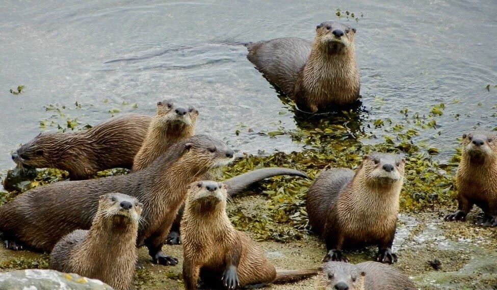
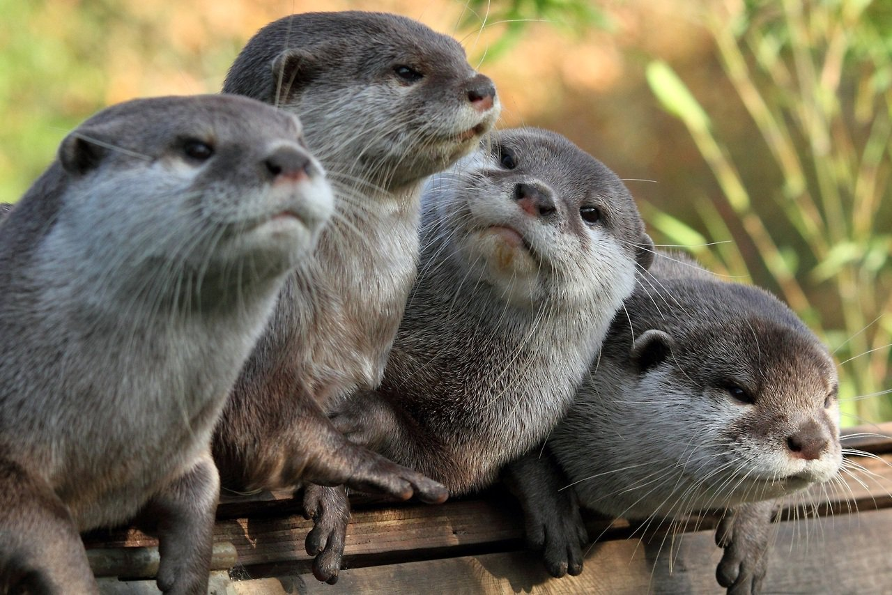
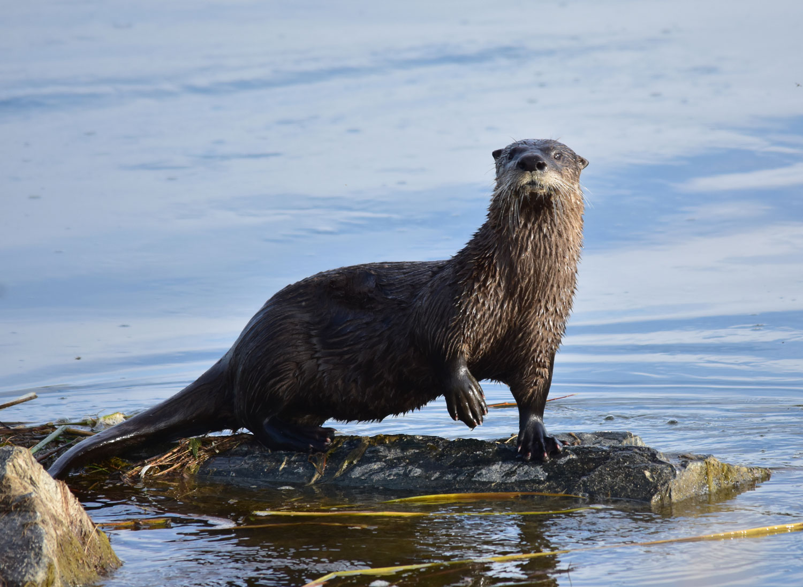
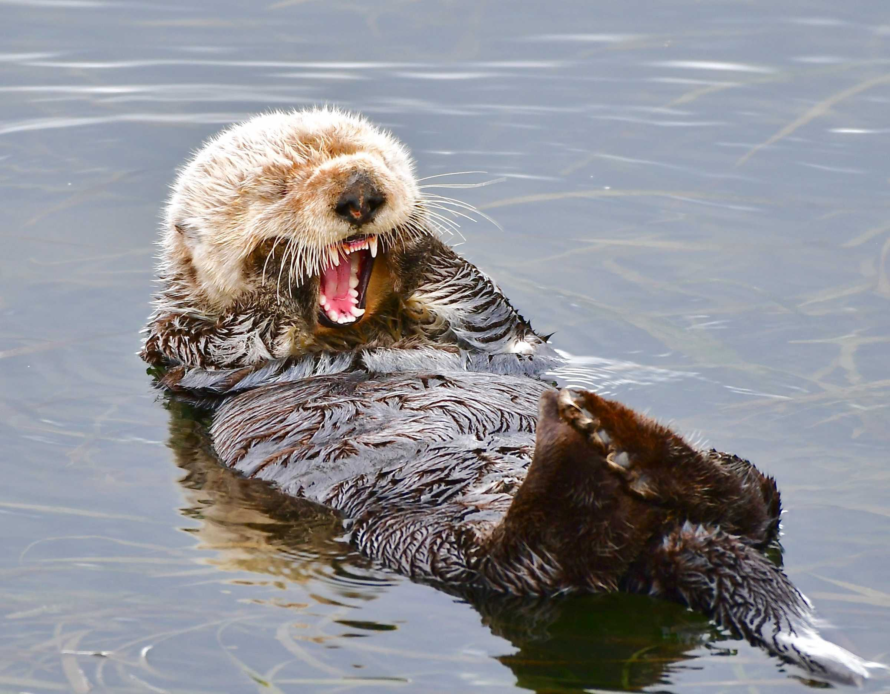

All About Otters
Description
Otters are semi-aquatic mammals known for their streamlined bodies, thick waterproof fur, and playful personalities. They have webbed feet for fast swimming and powerful tails that act as rudders.

Habitat
Depending on the species, otters live in a variety of water systems. River otters thrive in lakes, rivers, and wetlands, while sea otters live along rocky coastlines and giant marine kelp forests.

Species
There are 13 distinct otter species found across the globe. They range from the tiny Asian small-clawed otter to the massive Giant River Otter of South America, which can grow up to 6 feet long!

Distribution
Otters have a massive global footprint! They can be found on every continent except for Australia and Antarctica. Most species are concentrated around coastal regions and major river basins.

Food & Diet
Otters are carnivorous hunters with incredibly fast metabolisms. They eat their weight in fish, crabs, clams, and sea urchins. Sea otters famously float on their backs using rocks as tools to crack open stubborn shells!
